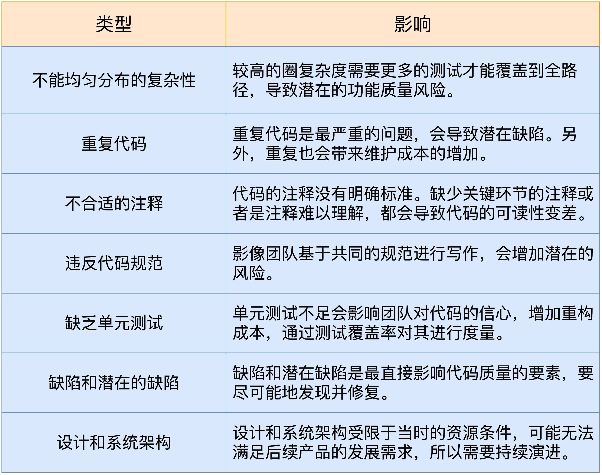
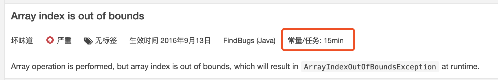

技术债务
如果要问软件开发人员在项目中最不愿意遇到的事情，答案很可能是接手了一个别人开发了一半的系统。而且，系统开发的时间越长，开发人员的抵触情绪也就越大。那么，既然是同一种代码语言，同一种语法规则，至少还是一个能运行的东西，开发人员为什么要发自内心地抵触呢？我猜，很可能是不想看别人写的代码。之所以会这样，看不懂和怕改错是一个非常重要的原因，而这些，其实都是技术债务的结果。
什么是技术债务？
那么，究竟什么是技术债务呢？它是从哪里来的呢？好好地写个代码，咋还欠债了呢？
试想这样一种场景，老板拍下来一个紧急需求，要求你在 3 天内开发完成上线。在评估需求和设计的时候，你发现，要实现这个功能，有两种方案：
方案 1：采用分层架构，引入消息队列。这样做的好处是结构清晰，功能解耦，但是需要 1 周的时间；
方案 2：直接在原有代码的基础上修修补补，硬塞进去一块逻辑和页面，这样做需要 2 天时间，还有 1 天时间来测试。
那么，你会选择哪个方案呢？
我想，在大多数情况下，你可能都会选择方案 2，因为业务的需求优先级始终是最高的。尤其是当下，市场竞争恨不得以秒来计算，先发优势非常明显。
而技术债务，就是指团队在开发过程中，为了实现短期目标选择了一种权宜之计，而非更好的解决方案，所要付出的代价。这个代价就是团队后续维护这套代码的额外工作成本，并且只要是债务就会有利息，债务偿还得越晚，代价也就越高。
实际上，带来技术债务的原因有很多，除了压力之下的快速开发之外，还包括不明真相的临时解决方案、新员工技术水平不足，和历史债务累积下来的无奈之举等。总之，代码维护的时间越长，引入的技术债务就会越多，从而使团队背上沉重的负担。
技术债务长什么样？
简单来说，你可以把技术债务理解为不好的代码。但是这里的“不好”，究竟是哪里不好呢？我相信，写过代码的人，或多或少都有过这样的经历：
一份代码里面定义了一堆全局变量，各个角落都在引用；
一个脚本仓库里面，一大堆名字看起来差不多的脚本，内容也都差不多；
一个函数里面修修补补写了上千行；
数据表查询各种神奇的关联；
参数传递纯靠肉眼计算顺序；
因为修改一段代码引发了一系列莫名其妙的问题；
……
那么，究竟要如何对代码的技术债务进行分类呢？我们可以借用“Sonar Code Quality Testing Essentials”一书中的代码“七宗罪”，也就是复杂性、重复代码、代码规范、注释有效性、测试覆盖度、潜在缺陷和系统架构七种典型问题。你可以参考一下这七种类型对应的解释和描述：

除了低质量的代码问题之外，还有很多其他类型的技术债务，比如不合理的架构、过时的技术、冷门的技术语言等等。
比如，我们公司之前基于 Ruby 语言开发了一套系统，但是与 Java、Python 等流行语言相比，Ruby 比较小众，所以很难找到合适的工程师，也影响了系统的进一步发展。再比如，到 2020 年元旦，官方即将停止为 Python 2.x 分支提供任何支持，如果现在你们的新系统还在采用 Python 2 进行开发，那么很快就将面对升级大版本的问题。虽然官方提供了一些减少迁移成本的方案，但是，从系统稳定性等方面来讲，依然有着非常大的潜在工作量。
为什么要重视技术债务？
那么问题来了，为什么要重视技术债务呢？或者说，烂代码会有什么问题呢？
从用户的角度来说，技术债务的多少好像并不影响用户的直观体验，说白了就是不耽误使用，应该有的功能都很正常。那么，回到最开始的那个例子，既然 2 天开发的系统，和 1 周开发的系统，从使用的角度来说并没有什么区别，那是不是就意味着，理应选择时间成本更低的方案呢？
显然没有这么简单。举个例子，一个人出门时衣着得体，但是家里却乱成一团，找点东西总是要花很长时间，这当然不是什么值得骄傲的事情。对于软件来说，也是如此。**技术债务最直接的影响就是内部代码质量的高低**。如果软件内部质量很差，会带来 3 个方面的影响：
1. 额外的研发成本
对一个架构清晰、代码规范、逻辑有序、注释全面的系统来说，新增一个特性可能只需要 1～2 天时间。但是，同样的需求，在一个混乱的代码里面，可能要花上 1 周甚至是更长的时间。因为，单是理解原有代码的逻辑、理清调用关系、把所有潜在的坑趟出来就不是件容易的事情。更何况还有大量重复的代码，每个地方都要修改一遍，一不小心就会出问题。
2. 不稳定的产品质量
代码质量越差，修改问题所带来的影响可能就越大，因为你不知道改了一处内容，会在哪个边缘角落引发异常问题。而且，这类代码往往也没有可靠的测试案例，能够保证修改前和修改后的逻辑是正确的。如果新增一个功能，导致了严重的线上问题，这时就要面临是继续修改还是回滚的选择问题。因为如果继续修改，可能会越错越多，就像一个无底洞一样，怎么都填不满。
3. 难以维护的产品
正是由于以上这些问题，研发人员在维护这种代码的时候往往是小心加谨慎，生怕出问题。这样一来，研发人员宁愿修修补补，也不愿意改变原有的逻辑，这就会导致代码质量陷入一种不断变坏的向下螺旋，越来越难以维护，问题越积累越多，直到再也没办法维护的那一天，就以重构的名义，推倒重来。其实这压根就不是重构，而是重写。
另外，如果研发团队整天跟这样的项目打交道，团队的学习能力和工作积极性都有可能受到影响。可见，技术债务的积累就像真的债务一样，属于“出来混，迟早要还”的那种，只不过是谁来还的问题而已。
如何量化技术债务？
软件开发不像是银行贷款，技术债务看不见摸不着，所以，我们需要一套计算方法把这种债务量化出来。**目前业界比较常用的开源软件，就是 SonarQube**。在 SonarQube 中，技术债是基于 SQALE 方法计算出来的。关于SQALE，全称是 Software Quality Assessment based on Lifecycle Expectations，这是一种开源算法。当然，今天的重点不是讲这个算法，你可以在官网查看更多的内容。同时，我再跟你分享一篇关于 SQALE 算法的文章，它可以帮你更深入地研究代码质量。
Sonar 通过将不同类型的规则，按照一套标准的算法进行识别和统计，最终汇总成一个时间，也就是说，要解决扫描出来的这些问题，需要花费的时间成本大概是多少，从而对代码质量有一种直观的认识。
Sonar 提供了一种通用的换算公式。举个例子，如下图所示，在 Sonar 的默认规则中，数据越界问题被定义为严重级别的问题，换算出来的技术债务等于 15 分钟。这里的 15 分钟，就是根据前面提到的 SQALE 分析模型计算得出的。当然，你也可以在规则配置里面对每一条规则的预计修复时间进行自定义。

计算出来的技术债务会因为开启的规则数量和种类的不同而不同。就像我在上一讲中提到的那样，团队内部对规则达成共识，是非常重要的。因为只有达成了共识，才能在这个基础上进行优化。否则，如果规则库变来变去，技术债务指标也会跟着变化，这样就很难看出团队代码质量的长期走势了。
另外，在 Sonar 中，还有一个更加直观的指标来表示代码质量，这就是 **SQALE 级别**。SQALE 的级别为 A、B、C、D、E，其中 A 是最高等级，意味着代码质量水平最高。级别的算法完全是基于技术债务比例得来的。简单来说，就是**根据当前代码的行数，计算修复技术债务的时间成本和完全重写这个代码的时间成本的比例**。在极端情况下，一份代码的技术债务修复时长甚至比完全推倒重写还要长，这就说明代码已经到了无法维护的境地。所以在具体实践的时候，也会格外重视代码的 SQALE 级别的健康程度。
技术债务比例 = 修复已有技术债务的时间 / 完全重写全部代码的时间
将代码行数引入进来，可以更加客观地计算整体质量水平。毕竟，一个 10 万行的代码项目和一个 1 千行的代码项目比较技术债务本身就没有意义。其实，这里体现了一种更加可视化的度量方式。比如，现在很多公司在做团队的效能度量时，往往会引入一大堆的指标来计算，根本看不懂。更加高级的做法，是将各种指标汇总成一组算法，并根据算法给出相应的评级。
当然，如果你想知道评级的计算方法，也可以层层展开，查看详细的数据。比如，持续集成能力，它是由持续集成频率、持续集成时长、持续集成成功率、问题修复时长等多个指标共同组成的。如果在度量过程中，你发现持续集成的整体评分不高，就可以点击进去查看每个指标的数据和状态，以及详细的执行历史。这种数据关联和下钻的能力对构建数据度量体系而言非常重要。
通过将技术债务可视化，团队会对代码质量有更直观的认识，那么接下来，就要解决这些问题了。
解决方法和原则
我走访过很多公司，他们都懂得技术债务的危害，不仅把 Sonar 搭建起来了，还定时执行了，但问题是没时间。的确，很多时候，我们没时间做单测，没时间做代码评审，没时间解决技术债务，但是这样一路妥协，啥时候是个头儿呢？
前几天，我去拜访一家国内最大的券商公司，眼前一亮。这样一家所谓的传统企业，在研项目的技术债务居然是个位数。在跟他们深入交流之后，我发现，公司在这方面下了大力气，高层领导强力管控，质量门禁严格执行，所以才获得了这样的效果。
所以，从来没有一切外部条件都具备的时候，要做的就是先干再说。那么，要想解决技术债务，有哪些步骤呢？
共识：团队内部要对技术债务的危害、解决项目的目标、规则的选择和制定达成一致意见。
可见：通过搭建开源的 Sonar 平台，将代码扫描整合进持续交付流水线中，定期或者按需执行，让技术债务变得可视化和可量化。不仅如此，Sonar 平台还能针对识别出来的问题，给出建议的解决方法，这对于团队快速提升编码水平，大有帮助。
止损：针对核心业务模块，对核心指标类型，比如 vulnerability，缺陷的严重和阻塞问题设定基线，也就是控制整体数量不再增长。
改善：创建技术优化需求，并在迭代中留出一定的时间修复已有问题，或者采用集中突击的方式搞定大头儿，再持续改进。
在解决技术债务的过程中，要遵循 4 条原则。
让技术债务呈良性下降趋势。一种好的趋势意味着一个好的起点，也是团队共同维护技术债务的一种约定。
优先解决高频修改的问题。技术债务的利息就是引入新功能的额外成本，那么对于高频修改的模块来说，这种成本会快速累积，这也就意味着修复的产出是最大的。至于哪些代码是高频修改的，只要通过**分析版本控制系统**就可以看出来。
在新项目中启动试点。如果现有的代码过于庞大，不可能在短时间内完成修复，那么你可以选择控制增长，同时在新项目中试点执行，一方面磨合规则的有效性，另一方面，也能试点质量门禁、IDE 插件集成等自动化流程。
技术债务无法被消灭，也不要等到太晚。只要还在开发软件项目，技术债务就基本上无法避免，所以不需要一下子把目标定得太高，循序渐进就行了。但同时，技术债务的累积也不是无穷无尽的，等到再也无法维护的时候就太迟了。
在刚开始解决技术债务的时候，最大的问题不是参考指标太少，而是太多了。所以团队需要花大量时间来 Review 规则。关于这个问题，我给你两条建议：第一，参考代码质量平台的默认问题级别。一般来说，阻塞和严重的问题的优先级比一般问题更高，这也是基于代码质量平台长时间的专业积累得出的结论。第二，你可以参考业界优秀公司的实践经验，比如很多公司都在参考阿里巴巴的 Java 开发手册，京东也有自己的编码规约。最后，我总结了一些影响比较大的问题类型，建议你优先进行处理。
- 大量重复代码；
- 类之间的耦合严重；
- 方法过于复杂；
- 条件判断嵌套太多；
- 缺少必要的异常处理；
- 多表关联和缺少索引；
- 代码风险和缺陷；
- 安全漏洞。